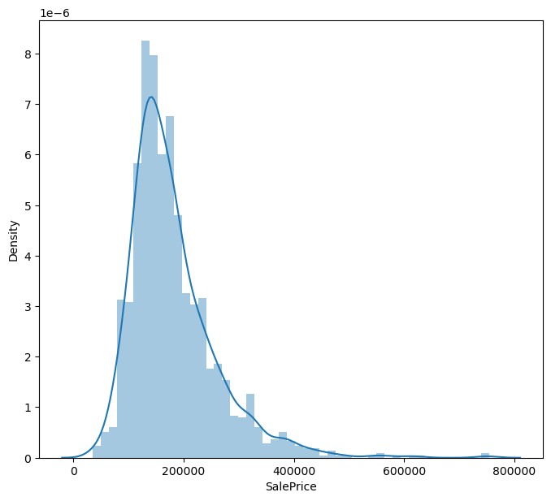
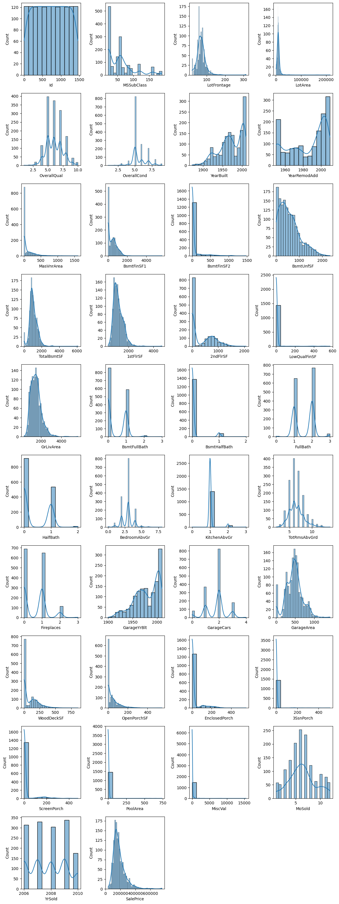
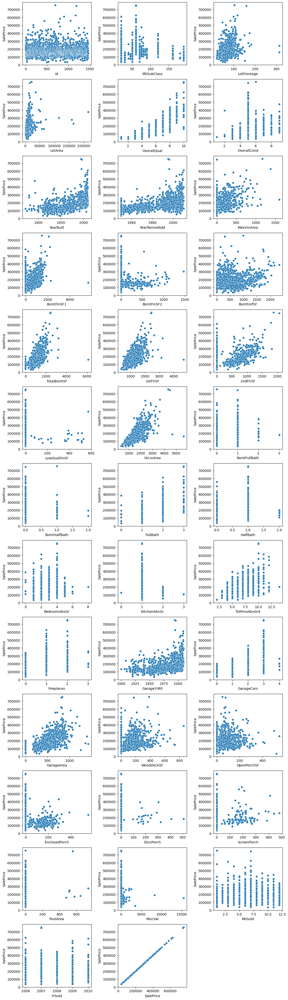
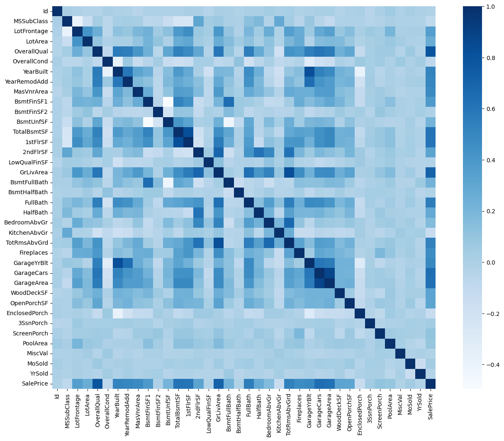
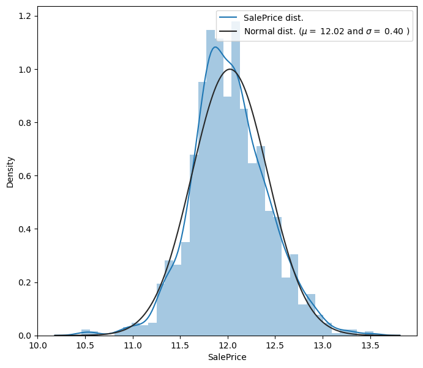
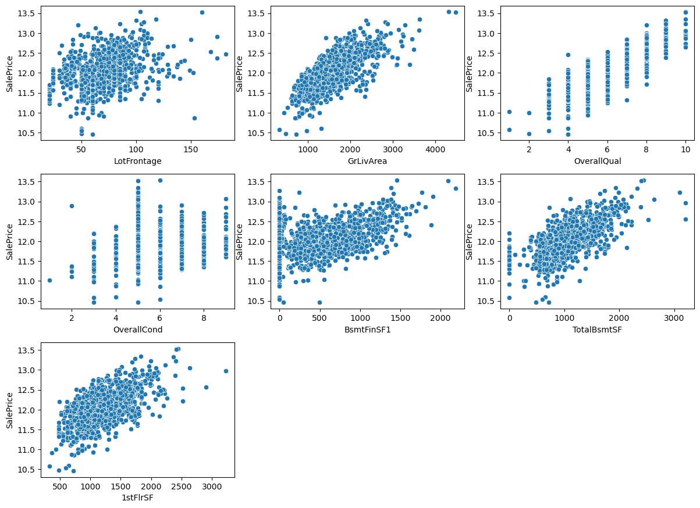

import pandas as pd
import numpy as np
# Exploration
import seaborn as sns
import matplotlib.pyplot as plt
# Stats
from scipy.stats import norm
# Data Preparation
from sklearn.preprocessing import OrdinalEncoder
from sklearn.preprocessing import OneHotEncoder
from sklearn.preprocessing import StandardScaler
from sklearn.compose import ColumnTransformer
# Models
from sklearn.tree import DecisionTreeRegressor
from sklearn.ensemble import RandomForestRegressor
# Metrics
from sklearn.model_selection import cross_val_score
# Hyperparameters
from sklearn.model_selection import GridSearchCV
from sklearn.model_selection import RandomizedSearchCV
from scipy.stats import randint
# Configs
import warnings
warnings.filterwarnings(action="ignore")
pd.options.display.max_seq_items = 8000
pd.options.display.max_rows = 8000
pd.set_option('display.max_columns', None)House Prices
Prevendo preço da venda de casas
Resumo
Este projeto é parte de uma mentoria oferecida pelo setor de projetos da empresa júnior de estatística da UFMG ‘EstatMG’. Nesse programa, ex-membros veteranos nos auxiliam na construção de projetos de machine learning, simulando situações reais do mercado de trabalho.
O objetivo deste projeto é prever os preços que casas foram vendidas. O banco de dados é da competição presente no Kaggle.
Foi usado um modelo Supervised, offline e Model-based, com a métrica RMSE (Root Mean Squared Error)
1 Importando dataset
# Read the dataset
train = pd.read_csv('data/train.csv')
test = pd.read_csv('data/test.csv')
train.shape, test.shape((1460, 81), (1459, 80))2 Análise exploratória
Nosso objetivo é prever a coluna SalePrice
train.head()| Id | MSSubClass | MSZoning | LotFrontage | LotArea | Street | Alley | LotShape | LandContour | Utilities | LotConfig | LandSlope | Neighborhood | Condition1 | Condition2 | BldgType | HouseStyle | OverallQual | OverallCond | YearBuilt | YearRemodAdd | RoofStyle | RoofMatl | Exterior1st | Exterior2nd | MasVnrType | MasVnrArea | ExterQual | ExterCond | Foundation | BsmtQual | BsmtCond | BsmtExposure | BsmtFinType1 | BsmtFinSF1 | BsmtFinType2 | BsmtFinSF2 | BsmtUnfSF | TotalBsmtSF | Heating | HeatingQC | CentralAir | Electrical | 1stFlrSF | 2ndFlrSF | LowQualFinSF | GrLivArea | BsmtFullBath | BsmtHalfBath | FullBath | HalfBath | BedroomAbvGr | KitchenAbvGr | KitchenQual | TotRmsAbvGrd | Functional | Fireplaces | FireplaceQu | GarageType | GarageYrBlt | GarageFinish | GarageCars | GarageArea | GarageQual | GarageCond | PavedDrive | WoodDeckSF | OpenPorchSF | EnclosedPorch | 3SsnPorch | ScreenPorch | PoolArea | PoolQC | Fence | MiscFeature | MiscVal | MoSold | YrSold | SaleType | SaleCondition | SalePrice | |
|---|---|---|---|---|---|---|---|---|---|---|---|---|---|---|---|---|---|---|---|---|---|---|---|---|---|---|---|---|---|---|---|---|---|---|---|---|---|---|---|---|---|---|---|---|---|---|---|---|---|---|---|---|---|---|---|---|---|---|---|---|---|---|---|---|---|---|---|---|---|---|---|---|---|---|---|---|---|---|---|---|---|
| 0 | 1 | 60 | RL | 65.0 | 8450 | Pave | NaN | Reg | Lvl | AllPub | Inside | Gtl | CollgCr | Norm | Norm | 1Fam | 2Story | 7 | 5 | 2003 | 2003 | Gable | CompShg | VinylSd | VinylSd | BrkFace | 196.0 | Gd | TA | PConc | Gd | TA | No | GLQ | 706 | Unf | 0 | 150 | 856 | GasA | Ex | Y | SBrkr | 856 | 854 | 0 | 1710 | 1 | 0 | 2 | 1 | 3 | 1 | Gd | 8 | Typ | 0 | NaN | Attchd | 2003.0 | RFn | 2 | 548 | TA | TA | Y | 0 | 61 | 0 | 0 | 0 | 0 | NaN | NaN | NaN | 0 | 2 | 2008 | WD | Normal | 208500 |
| 1 | 2 | 20 | RL | 80.0 | 9600 | Pave | NaN | Reg | Lvl | AllPub | FR2 | Gtl | Veenker | Feedr | Norm | 1Fam | 1Story | 6 | 8 | 1976 | 1976 | Gable | CompShg | MetalSd | MetalSd | None | 0.0 | TA | TA | CBlock | Gd | TA | Gd | ALQ | 978 | Unf | 0 | 284 | 1262 | GasA | Ex | Y | SBrkr | 1262 | 0 | 0 | 1262 | 0 | 1 | 2 | 0 | 3 | 1 | TA | 6 | Typ | 1 | TA | Attchd | 1976.0 | RFn | 2 | 460 | TA | TA | Y | 298 | 0 | 0 | 0 | 0 | 0 | NaN | NaN | NaN | 0 | 5 | 2007 | WD | Normal | 181500 |
| 2 | 3 | 60 | RL | 68.0 | 11250 | Pave | NaN | IR1 | Lvl | AllPub | Inside | Gtl | CollgCr | Norm | Norm | 1Fam | 2Story | 7 | 5 | 2001 | 2002 | Gable | CompShg | VinylSd | VinylSd | BrkFace | 162.0 | Gd | TA | PConc | Gd | TA | Mn | GLQ | 486 | Unf | 0 | 434 | 920 | GasA | Ex | Y | SBrkr | 920 | 866 | 0 | 1786 | 1 | 0 | 2 | 1 | 3 | 1 | Gd | 6 | Typ | 1 | TA | Attchd | 2001.0 | RFn | 2 | 608 | TA | TA | Y | 0 | 42 | 0 | 0 | 0 | 0 | NaN | NaN | NaN | 0 | 9 | 2008 | WD | Normal | 223500 |
| 3 | 4 | 70 | RL | 60.0 | 9550 | Pave | NaN | IR1 | Lvl | AllPub | Corner | Gtl | Crawfor | Norm | Norm | 1Fam | 2Story | 7 | 5 | 1915 | 1970 | Gable | CompShg | Wd Sdng | Wd Shng | None | 0.0 | TA | TA | BrkTil | TA | Gd | No | ALQ | 216 | Unf | 0 | 540 | 756 | GasA | Gd | Y | SBrkr | 961 | 756 | 0 | 1717 | 1 | 0 | 1 | 0 | 3 | 1 | Gd | 7 | Typ | 1 | Gd | Detchd | 1998.0 | Unf | 3 | 642 | TA | TA | Y | 0 | 35 | 272 | 0 | 0 | 0 | NaN | NaN | NaN | 0 | 2 | 2006 | WD | Abnorml | 140000 |
| 4 | 5 | 60 | RL | 84.0 | 14260 | Pave | NaN | IR1 | Lvl | AllPub | FR2 | Gtl | NoRidge | Norm | Norm | 1Fam | 2Story | 8 | 5 | 2000 | 2000 | Gable | CompShg | VinylSd | VinylSd | BrkFace | 350.0 | Gd | TA | PConc | Gd | TA | Av | GLQ | 655 | Unf | 0 | 490 | 1145 | GasA | Ex | Y | SBrkr | 1145 | 1053 | 0 | 2198 | 1 | 0 | 2 | 1 | 4 | 1 | Gd | 9 | Typ | 1 | TA | Attchd | 2000.0 | RFn | 3 | 836 | TA | TA | Y | 192 | 84 | 0 | 0 | 0 | 0 | NaN | NaN | NaN | 0 | 12 | 2008 | WD | Normal | 250000 |
train.info()<class 'pandas.core.frame.DataFrame'>
RangeIndex: 1460 entries, 0 to 1459
Data columns (total 81 columns):
# Column Non-Null Count Dtype
--- ------ -------------- -----
0 Id 1460 non-null int64
1 MSSubClass 1460 non-null int64
2 MSZoning 1460 non-null object
3 LotFrontage 1201 non-null float64
4 LotArea 1460 non-null int64
5 Street 1460 non-null object
6 Alley 91 non-null object
7 LotShape 1460 non-null object
8 LandContour 1460 non-null object
9 Utilities 1460 non-null object
10 LotConfig 1460 non-null object
11 LandSlope 1460 non-null object
12 Neighborhood 1460 non-null object
13 Condition1 1460 non-null object
14 Condition2 1460 non-null object
15 BldgType 1460 non-null object
16 HouseStyle 1460 non-null object
17 OverallQual 1460 non-null int64
18 OverallCond 1460 non-null int64
19 YearBuilt 1460 non-null int64
20 YearRemodAdd 1460 non-null int64
21 RoofStyle 1460 non-null object
22 RoofMatl 1460 non-null object
23 Exterior1st 1460 non-null object
24 Exterior2nd 1460 non-null object
25 MasVnrType 1452 non-null object
26 MasVnrArea 1452 non-null float64
27 ExterQual 1460 non-null object
28 ExterCond 1460 non-null object
29 Foundation 1460 non-null object
30 BsmtQual 1423 non-null object
31 BsmtCond 1423 non-null object
32 BsmtExposure 1422 non-null object
33 BsmtFinType1 1423 non-null object
34 BsmtFinSF1 1460 non-null int64
35 BsmtFinType2 1422 non-null object
36 BsmtFinSF2 1460 non-null int64
37 BsmtUnfSF 1460 non-null int64
38 TotalBsmtSF 1460 non-null int64
39 Heating 1460 non-null object
40 HeatingQC 1460 non-null object
41 CentralAir 1460 non-null object
42 Electrical 1459 non-null object
43 1stFlrSF 1460 non-null int64
44 2ndFlrSF 1460 non-null int64
45 LowQualFinSF 1460 non-null int64
46 GrLivArea 1460 non-null int64
47 BsmtFullBath 1460 non-null int64
48 BsmtHalfBath 1460 non-null int64
49 FullBath 1460 non-null int64
50 HalfBath 1460 non-null int64
51 BedroomAbvGr 1460 non-null int64
52 KitchenAbvGr 1460 non-null int64
53 KitchenQual 1460 non-null object
54 TotRmsAbvGrd 1460 non-null int64
55 Functional 1460 non-null object
56 Fireplaces 1460 non-null int64
57 FireplaceQu 770 non-null object
58 GarageType 1379 non-null object
59 GarageYrBlt 1379 non-null float64
60 GarageFinish 1379 non-null object
61 GarageCars 1460 non-null int64
62 GarageArea 1460 non-null int64
63 GarageQual 1379 non-null object
64 GarageCond 1379 non-null object
65 PavedDrive 1460 non-null object
66 WoodDeckSF 1460 non-null int64
67 OpenPorchSF 1460 non-null int64
68 EnclosedPorch 1460 non-null int64
69 3SsnPorch 1460 non-null int64
70 ScreenPorch 1460 non-null int64
71 PoolArea 1460 non-null int64
72 PoolQC 7 non-null object
73 Fence 281 non-null object
74 MiscFeature 54 non-null object
75 MiscVal 1460 non-null int64
76 MoSold 1460 non-null int64
77 YrSold 1460 non-null int64
78 SaleType 1460 non-null object
79 SaleCondition 1460 non-null object
80 SalePrice 1460 non-null int64
dtypes: float64(3), int64(35), object(43)
memory usage: 924.0+ KBAnalisando nosso label SalePrice
plt.subplots(figsize=(8, 7))
sns.distplot(train['SalePrice'])
plt.show()
print('Curtose: %f' % train.SalePrice.kurt())
print('Assimetria: %f' %train.SalePrice.skew())Curtose: 6.536282
Assimetria: 1.882876# Coletando features numericas
numeric_features = train.select_dtypes(include='number').columns.tolist()# Distribuições das features
fig, axes = plt.subplots(figsize=(12, 120))
for i, feature in enumerate(list(train[numeric_features]), 1):
plt.subplot(len(numeric_features), 4, i)
sns.histplot(data=train, x=feature, kde= True)
plt.tight_layout()
plt.show()
# Visualizando alguns outliers
fig, axes = plt.subplots(figsize=(12, 120))
for i, feature in enumerate(list(train[numeric_features]), 1):
plt.subplot(len(numeric_features), 3, i)
sns.scatterplot(data=train, x=feature,y= 'SalePrice')
plt.tight_layout()
plt.show()
# Correlações
corr = train.corr()
plt.subplots(figsize= (17,12))
sns.heatmap(corr, square=True, cmap= 'Blues')
plt.show()
# Detectando valores faltantes
def missing_values(df):
total = df.isnull().sum()
percent = round(df.isnull().sum()/len(df)*100, 2)
concat = pd.concat([total, percent], axis= 1, keys=['Total', '%'])
return concat.loc[concat['Total'] != 0].sort_values(by= ['Total'], ascending= False)
missing_values(train)| Total | % | |
|---|---|---|
| PoolQC | 1453 | 99.52 |
| MiscFeature | 1406 | 96.30 |
| Alley | 1369 | 93.77 |
| Fence | 1179 | 80.75 |
| FireplaceQu | 690 | 47.26 |
| LotFrontage | 259 | 17.74 |
| GarageType | 81 | 5.55 |
| GarageYrBlt | 81 | 5.55 |
| GarageFinish | 81 | 5.55 |
| GarageQual | 81 | 5.55 |
| GarageCond | 81 | 5.55 |
| BsmtExposure | 38 | 2.60 |
| BsmtFinType2 | 38 | 2.60 |
| BsmtFinType1 | 37 | 2.53 |
| BsmtCond | 37 | 2.53 |
| BsmtQual | 37 | 2.53 |
| MasVnrArea | 8 | 0.55 |
| MasVnrType | 8 | 0.55 |
| Electrical | 1 | 0.07 |
3 Preparando os dados
O label não possui uma distribuição normal, então aplico uma transformação usando logaritmo natural
plt.subplots(figsize=(8, 7))
sns.distplot(train['SalePrice'])
plt.show()# log transform
train['SalePrice'] = np.log(train.SalePrice)plt.subplots(figsize=(8, 7))
sns.distplot(train['SalePrice'], fit= norm)
mu, sigma = norm.fit(train['SalePrice'])
plt.legend(['SalePrice dist.','Normal dist. ($\mu=$ {:.2f} and $\sigma=$ {:.2f} )'.format(mu, sigma)], loc='best')
plt.show()
3.1 Limpeza dos dados
# Removendo outliers
train.drop(train[train['LotFrontage'] > 250].index, inplace= True)
train.drop(train[train['GrLivArea'] > 4500].index, inplace=True)
train.drop(train[(train['OverallQual']<5) & (train['SalePrice']>200000)].index, inplace=True)
train.drop(train[(train['OverallCond']<5) & (train['SalePrice']>300000)].index, inplace=True)
train.drop(train[train['BsmtFinSF1'] > 4000].index, inplace=True)
train.drop(train[train['TotalBsmtSF'] > 5000].index, inplace=True)
train.drop(train[train['1stFlrSF'] > 4000].index, inplace= True)
train.reset_index(drop=True, inplace=True)
train.shape(1457, 81)removed_outliers = ['LotFrontage','GrLivArea','OverallQual','OverallCond','BsmtFinSF1','TotalBsmtSF', '1stFlrSF']
# Visualizando alguns outliers
fig, axes = plt.subplots(figsize=(12, 20))
for i, feature in enumerate(list(train[removed_outliers]), 1):
plt.subplot(len(removed_outliers), 3, i)
sns.scatterplot(data=train, x=feature,y= 'SalePrice')
plt.tight_layout()
plt.show()
# Dividindo features e labels
train_labels = train['SalePrice'].reset_index(drop= True)
train_features = train.drop(['SalePrice'], axis=1)
test_features = test
# Features unidas
combine = pd.concat([train_features, test_features]).reset_index(drop= True)
combine.shape(2916, 80)# Transformando variaveis que deveriam ser discretas
combine['MSSubClass'] = combine['MSSubClass'].apply(str)
combine['YrSold'] = combine['YrSold'].astype(str)
combine['MoSold'] = combine['MoSold'].astype(str)# Removendo valores nulos
missing_values(combine)| Total | % | |
|---|---|---|
| PoolQC | 2907 | 99.69 |
| MiscFeature | 2811 | 96.40 |
| Alley | 2718 | 93.21 |
| Fence | 2345 | 80.42 |
| FireplaceQu | 1420 | 48.70 |
| LotFrontage | 486 | 16.67 |
| GarageFinish | 159 | 5.45 |
| GarageQual | 159 | 5.45 |
| GarageCond | 159 | 5.45 |
| GarageYrBlt | 159 | 5.45 |
| GarageType | 157 | 5.38 |
| BsmtExposure | 82 | 2.81 |
| BsmtCond | 82 | 2.81 |
| BsmtQual | 81 | 2.78 |
| BsmtFinType2 | 80 | 2.74 |
| BsmtFinType1 | 79 | 2.71 |
| MasVnrType | 24 | 0.82 |
| MasVnrArea | 23 | 0.79 |
| MSZoning | 4 | 0.14 |
| BsmtFullBath | 2 | 0.07 |
| BsmtHalfBath | 2 | 0.07 |
| Functional | 2 | 0.07 |
| Utilities | 2 | 0.07 |
| GarageArea | 1 | 0.03 |
| GarageCars | 1 | 0.03 |
| Electrical | 1 | 0.03 |
| KitchenQual | 1 | 0.03 |
| TotalBsmtSF | 1 | 0.03 |
| BsmtUnfSF | 1 | 0.03 |
| BsmtFinSF2 | 1 | 0.03 |
| BsmtFinSF1 | 1 | 0.03 |
| Exterior2nd | 1 | 0.03 |
| Exterior1st | 1 | 0.03 |
| SaleType | 1 | 0.03 |
No arquivo de descrição das variáveis temos informações que valores faltantes NA na verdade representam que a casa não possui tal caracteristica.
def missing_fix(features):
# Determina o valor de acordo com o data_description
features['Functional'] = features['Functional'].fillna('Typ')
# Determina de acordo com a moda
features['Electrical'] = features['Electrical'].fillna(features['Electrical'].mode()[0])
features['KitchenQual'] = features['KitchenQual'].fillna(features['KitchenQual'].mode()[0])
features['Exterior1st'] = features['Exterior1st'].fillna(features['Exterior1st'].mode()[0])
features['Exterior2nd'] = features['Exterior2nd'].fillna(features['Exterior2nd'].mode()[0])
features['SaleType'] = features['SaleType'].fillna(features['SaleType'].mode()[0])
# Determina de acordo com features semelhantes
features['MSZoning'] = features.groupby('MSSubClass')['MSZoning'].transform(lambda x: x.fillna(x.mode()[0]))
features['LotFrontage'] = features.groupby('Neighborhood')['LotFrontage'].transform(lambda x: x.fillna(x.median()))
features['Utilities'] = features.groupby('MSSubClass')['Utilities'].transform(lambda x: x.fillna(x.mode()[0]))
# None para categoricas
objects = []
for i in features.columns:
if features[i].dtype == object:
objects.append(i)
features.update(features[objects].fillna('None'))
# 0 para numericas
numeric_dtypes = ['int16', 'int32', 'int64', 'float16', 'float32', 'float64']
numeric = []
for i in features.columns:
if features[i].dtype in numeric_dtypes:
numeric.append(i)
features.update(features[numeric].fillna(0))
return features
combine = missing_fix(combine)
missing_values(combine)| Total | % |
|---|
3.2 Feature Engineering
# Criando a variável area total
combine['TotalSF'] = combine['TotalBsmtSF'] + combine['1stFlrSF'] + combine['2ndFlrSF']numeric_features = combine.select_dtypes(include='number').columns.tolist()
categoric_features = combine.select_dtypes(include= 'object').columns.tolist()
# Categoricas
## Ordinais
ord_features = ['LotShape', 'LandContour', 'Utilities', 'LandSlope', 'ExterQual', 'ExterCond', 'BsmtQual', 'BsmtCond',
'BsmtExposure', 'BsmtFinType1', 'BsmtFinType2', 'HeatingQC', 'KitchenQual', 'Functional', 'FireplaceQu',
'GarageFinish', 'GarageQual', 'GarageCond', 'PavedDrive', 'PoolQC', 'Fence']
## Nominais
nom_features = list(set(categoric_features) - set(ord_features))
# Numericas
## Discretas
disc_features = ['OverallQual', 'OverallCond', 'BsmtFullBath', 'BsmtHalfBath', 'FullBath', 'HalfBath', 'BedroomAbvGr',
'KitchenAbvGr', 'TotRmsAbvGrd', 'Fireplaces', 'GarageCars']
## Continuas
cont_features = list(set(numeric_features) - set(disc_features))Aplicando Encoding as variáveis
full_pipeline = ColumnTransformer([
('ord_enc', OrdinalEncoder(), ord_features),
('one_hot', OneHotEncoder(), nom_features),
('strd', StandardScaler(), cont_features),
], remainder= 'passthrough')
combine_tr = full_pipeline.fit_transform(combine)
train_features_tr = combine_tr[:len(train_labels), :]
test_features_tr = combine_tr[len(train_labels):, :]4 Lista de modelos
Estou usando K-fold cross-validation com 12 folds para avaliar os modelos
# Função para a métrica
def cv_rmse(model, X=train_features_tr):
rmse = np.sqrt(-cross_val_score(model, X, train_labels, scoring="neg_mean_squared_error", cv=12))
return (rmse)
scores = []# Modelos
tree_reg = DecisionTreeRegressor(random_state=12)
forest_reg = RandomForestRegressor(random_state=12)# Fit
tree_reg.fit(train_features_tr, train_labels)
forest_reg.fit(train_features_tr, train_labels)
# Predict Train
tree_pred = tree_reg.predict(train_features_tr)
forest_pred = forest_reg.predict(train_features_tr)# Scores
models = [tree_reg, forest_reg]
for i in models:
scores.append(cv_rmse(i))
scores = {'Tree': [scores[0].mean(),scores[0].std()],
'Forest': [scores[1].mean(),scores[1].std()]}
scores = pd.DataFrame(scores, index= ['Média', 'Desvio-Padrão'])
scores| Tree | Forest | |
|---|---|---|
| Média | 0.204477 | 0.135879 |
| Desvio-Padrão | 0.022316 | 0.015716 |
5 Ajustando hiperparâmetros
param_grid = [{'n_estimators': [2, 10, 20], 'max_features': [2, 4, 6, 8]},
{'bootstrap': [False], 'n_estimators': [2, 10, 20], 'max_features': [2, 4, 6, 8]}]
grid_search = GridSearchCV(forest_reg, param_grid, cv=12,
scoring='neg_mean_squared_error', return_train_score=True)
grid_search.fit(train_features_tr, train_labels)
grid_search.best_params_{'bootstrap': False, 'max_features': 8, 'n_estimators': 20}Como os melhores valores foram os maiores valores dados, vamos refazer com maiores valores
param_grid = [{'bootstrap': [False], 'n_estimators': [260, 280, 300], 'max_features': [60, 64, 68]}]
grid_search = GridSearchCV(forest_reg, param_grid, cv=12,
scoring='neg_mean_squared_error', return_train_score=True)
grid_search.fit(train_features_tr, train_labels)
grid_search.best_params_{'bootstrap': False, 'max_features': 68, 'n_estimators': 300}6 Avaliando no test-set
final_model = grid_search.best_estimator_
final_predictions = final_model.predict(test_features_tr)ids = pd.read_csv('data/sample_submission.csv').drop(['SalePrice'], axis=1)
predictions = pd.DataFrame(np.exp(final_predictions))
submissions = pd.concat([ids, predictions], axis= 1).reset_index(drop= True)
submissions.rename(columns={0: "SalePrice"}, inplace= True)
submissions.to_csv('data/submission.csv', index= False)Na competição do Kaggle, obtive um score de 0.13956 no RMSE (Root Mean Square Error).